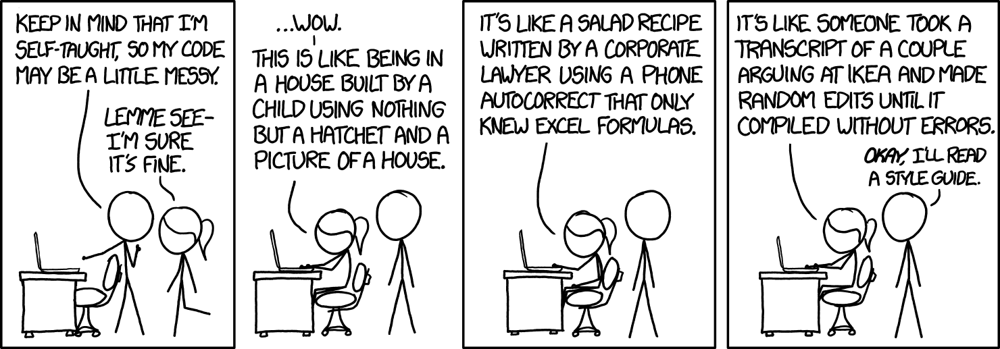
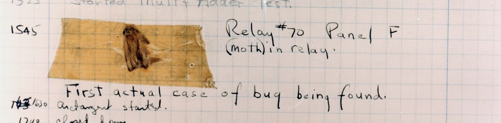
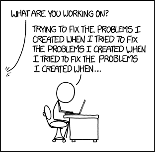
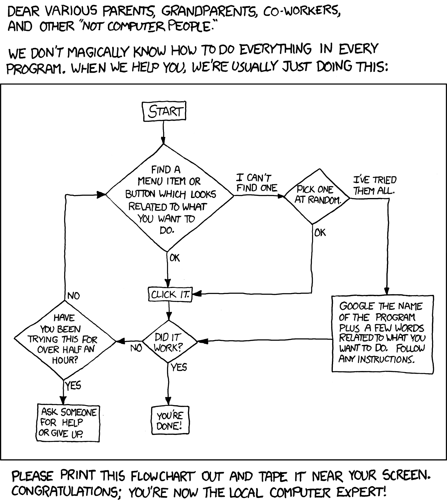
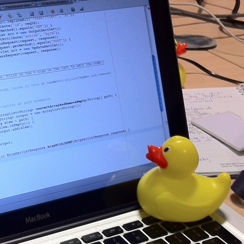

Introduction — Your First Program
Today assumes you have never programmed before. You will see more things than we can fully explain, and that is on purpose — Week 1 is about recognising the shape of a program, not mastering it.
Six sections, same as the slides
Choose a section from the list to open it — or use the arrow keys once the list has focus. Code blocks are live: edit them, run them, and break them on purpose.
01What programming is
1.1Telling a computer what to do
Once that meant writing the right sequence of zeroes and ones into memory. In 1954 John Backus developed FORTRAN, and the programmer could start caring about what to do rather than exactly how.
{kind=link}

{kind=link}
The history of programming is the history of raising the level of abstraction. Every convenience you are about to complain about was once a luxury.
1.2“Can’t AI just do all this now?”
A randomised controlled trial by METR (July 2025) gave experienced developers AI tools on their own projects. They predicted they would be 24% faster. They were 19% slower — and afterwards still believed they had been 20% faster.

They could not tell. The tool is not the problem — the inability to evaluate its output is, and that is a reading skill. It is what this subject builds.
1.3The hard part is knowing what is hard

Two requests that sound equally reasonable to someone who has never programmed. One is an afternoon’s work; the other was an open research problem for decades. Building the instinct for which is which takes the whole session — you will start the first time an “easy” exercise takes two hours.
1.4The three basic tools
- State — managing what situation the program is in
- Branching — choosing which code runs, based on the state
- Repetition — repeating code, controlled by some parameter
Add input and output and that is everything needed for a general-purpose language. This is SLO1.
| Concept | Week | Topic |
|---|---|---|
| State | Week 2 | Data types and variables |
| Branching | Week 3 | Decisions and branching program flow |
| Repetition | Week 5 | Loops and iterative program flow |
Everything from Week 6 — classes, methods, lists, files, inheritance — adds no fourth idea. It is about organising these three as programs grow.
02Your first Java program
2.1Hello, Java
A Java program is a sequence of statements in blocks. Blocks nest, and the top level is a class. Run this, then change the message and run it again.
Now break it on purpose: delete the semicolon and run it again. Read what the compiler says before you put it back.
2.2Java is compiled

Before your Java runs, a compiler reads the whole file and translates it. If it cannot, nothing runs at all — which is why Java catches some mistakes before the program starts. Python skips this step: a trade, not a free win.
2.3Two rules, and some conventions
Java is case sensitive. bob ≠ Bob ≠
BOB. And the file name must match the public class name —
public class Hello lives in Hello.java.
Conventions, which everyone follows but nothing enforces: classes start uppercase,
variables lowercase, constants in ALL_CAPS, and you indent every new block.
| Token | What it means | Explained in |
|---|---|---|
| public | everything can access this | Week 7 |
| static | needs no object to run | Week 7 |
| void | returns nothing | Week 7 |
| String[] args | an array of Strings | Week 4 |
Java 25 added a “smooth on-ramp” so beginners can skip that boilerplate.
On public static void main(String[] args), the official OpenJDK proposal
(JEP 512) says: “mysterious and unhelpful… not used in small
programs.” If it felt like meaningless ritual, that was not you being slow.
03Variables, types and values
3.1Declaration, initialisation, assignment
Declaration is a type and a name. Initialisation is the first assignment. Assignment takes the value on the right and stores it on the left.
In maths x = 4 asserts that x and 4 are the same. In Java
x = 4; takes the value on the right and stores it on the left.
That is why a = a + 1; is nonsense as maths and routine as Java.
3.2Every type is a promise about size
In December 2014 Psy’s Gangnam Style passed
2,147,483,647 YouTube views. That is exactly 231−1 — the
largest number a 32-bit int can hold. YouTube moved the counter to 64 bits.
| Type | Runs out at about |
|---|---|
| int | 2.1 billion |
| long | 9.2 quintillion |
In Java, choosing is your job. Python has one int with no
limit and chooses for you.
3.3What this looks like in real code
Nobody ships 7 / 2. They ship this — and it prints a plausible number every
single time:
It compiles. It runs. Nothing warns you. One wrong type, and you have now met the only kind of error that never announces itself.
3.4Naming things

“There are 2 hard problems in computer science: cache invalidation, naming things, and off-by-1 errors.”
Leon Bambrick, after Phil KarltonName a variable for the person reading it in Week 11. That person is you.
04The same ideas in Python
4.1Hello, Python
That is the whole program, because Python allows code outside of classes while Java requires everything inside one. The feature lists are almost identical — only two rows differ, and they explain nearly everything else you will notice.
| Java | Python | |
|---|---|---|
| Execution | compiled | interpreted |
| Typing | static | dynamic |

A joke about how little Python makes you write — and only half a joke. Java’s ceremony buys errors caught before the program runs. Neither is better.
4.2Indentation is not decoration
Java delimits blocks with { and }, so formatting is cosmetic.
Python uses the indentation itself. Run this with 5, then with
50. Then un-indent the print and try 50 again.
Use four spaces and let the editor do it. Never mix tabs and spaces — it produces errors that are invisible on screen. In Java bad indentation is ugly; in Python it is wrong.
05When things go wrong
5.1The first actual bug

{kind=link}
Engineers had been calling faults “bugs” since Edison — which is exactly why the note says first actual case. It is a pun, and it only works because the word already existed. Grace Hopper did not coin it; she just found the best possible example.
5.2Three kinds of error
- Compile-time — the compiler cannot compile your code. It tells you.
- Run-time — it compiles, then crashes while running. It tells you.
- Logic — it runs perfectly and does the wrong thing. Nothing tells you.
On 19 July 2024 a CrowdStrike update crashed roughly 8.5 million Windows machines. The code expected 20 values; the update sent 21. Reading the 21st ran off the end of the array. It compiled, it shipped, and it passed their tests.
A QA engineer walks into a bar. Orders a beer. Orders 0 beers. Orders −1 beers.
Orders a lizard.
The first real customer asks where the toilet is. The bar bursts into flames.
5.3Reading a compile error
Run this. It will not compile — and that is the point.
Which file → which line → what
kind → which token (follow the ^).
1. Turn on Line Numbers in the Ed editor settings. 2. Fix the first error, then recompile — errors 2 through 14 are usually downstream of error 1.
5.4Crashes, and reading a stack trace
This one compiles. It asks for a name, and then tries to read it as a number.
Most of the trace is inside Scanner — a thoroughly tested library. One line
is yours. Start there. This program works fine if your name is a
number.
Python puts the error type last where Java puts it first. In a Python traceback, read the last line first:
5.5Debugging, honestly

“Debugging is twice as hard as writing a program in the first place. So if you’re as clever as you can be when you write it, how will you ever debug it?”
Brian Kernighan, The Elements of Programming Style, 197899 little bugs in the code. Take one down, patch it around — 127 little bugs in the code.
Programmer folkloreWrite the boring, obvious version first. You will be reading it again at 11pm with something broken. Bugs are not a sign you are bad at this.
06Ed, labs and getting help
6.1Ed, and why we ask you to post publicly

- A public thread answers it once, for everybody
- A private one answers it once, for you
- Search first — and post no code in the thread
Solved it yourself after posting? Reply with the answer. Do not be the 2003 forum post that says “never mind, fixed it”.
6.2Two ways to get unstuck


{kind=link}
You usually find the bug mid-sentence: “… this line takes the total and… oh.” The comic is a real algorithm — try it for ten minutes before you post.
6.3Run, Mark, and the lab rules
Run executes your code so you can watch it behave. Mark submits it to automated tests.
- Unlimited attempts — attempt 1 and attempt 101 score the same
- Output must match exactly — a stray space fails the test
- You must pass every test case in an exercise to get its marks
- Assessed exercises are due 11:55pm the Monday of the following week
“But it works on my machine!” Ed is the machine that counts.
Programmer folklore6.4Why we care that you can read code
The Stack Overflow Developer Survey 2025: 84% of developers use AI tools, but only 3.1% highly trust the output. The biggest frustration, at 66%, is “AI solutions that are almost right, but not quite.”
“Almost right” is only visible if you can read the code. That is what this subject builds, and what the four oral code comprehension checks measure. It is also why pasting in code you cannot explain fails twice — as misconduct, and as engineering.
Twenty questions on Week 1
Answer them all, then grade. Every question explains its answer — including why the wrong options are wrong. Nothing here is recorded or submitted.
What to actually do
On Ed, work through all seven Week 1 lessons, top to bottom:
- Everything you need to know about Ed — turn on Line Numbers
- Everything you need to know about labs
- An important warning — please read this one properly
- The Basics of Programming
- Introduction to Java
- Introduction to Python
- Debugging Programs — don't skip it; your first lab throws errors at you
Change things. Break things on purpose and read what the error says. Refreshing the page restores the original — you cannot damage anything.
Nothing needs installing — Ed gives you Java and Python in the browser. No lab in Week 1; labs start Week 2. Assessed lab exercises are due 11:55pm the Monday of the following week, with unlimited attempts — but you must pass all test cases in an exercise to get its marks.
Next week: variables, types, and talking to the user.
Everything cited on this page
Every claim above links to where it came from. Checking a source yourself is a better habit than trusting any lecture slide, including ours.
Articles and reports
| Used in | Source |
|---|---|
| 1.2 | METR — Measuring the Impact of Early-2025 AI on Experienced Open-Source Developer Productivity, 10 July 2025 |
| 2.3 | OpenJDK — JEP 512: Compact Source Files and Instance Main Methods |
| 3.2 | The Register — Gangnam Style BREAKS YouTube, 3 December 2014 |
| 4.1 | TIOBE Programming Community Index |
| 5.2 | ABC News — CrowdStrike root cause analysis, 7 August 2024 |
| 5.2 | US SEC — SEC Charges Knight Capital With Violations of Market Access Rule, 16 October 2013 |
| 6.4 | Stack Overflow Developer Survey 2025 — AI |
Comics
All by Randall Munroe, xkcd.com, used under CC BY-NC 2.5: 303, 353, 627, 979, 1425, 1513, 1739, 1838.
Photographs
- ENIAC, 1946 — US Army, public domain
- FORTRAN punched card — Arnold Reinhold, CC BY-SA 2.5
- Mark II logbook, 1947 — Naval Surface Warfare Center, Dahlgren, public domain
- Rubber duck debugging — Tom Morris, CC BY-SA 3.0
All photographs via Wikimedia Commons.